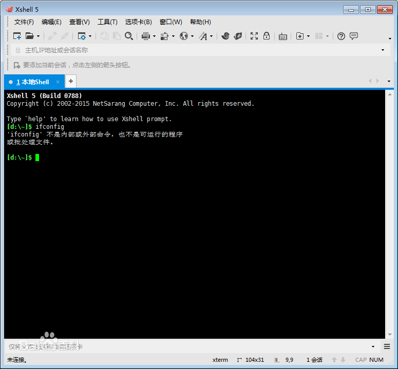
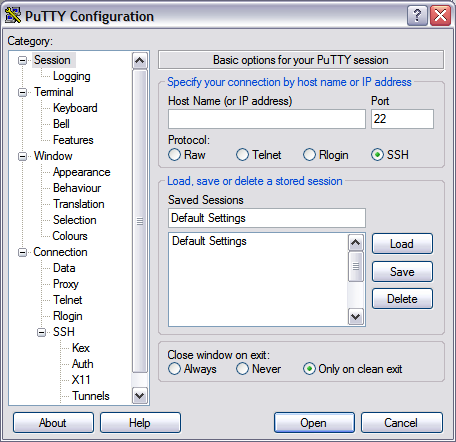

远程连接Linux
在实际开发中，Linux服务器都是被放在服务器机房里的，我们不能直接进入到服务器机房去操作这台Linux服务器，而是通过一些远程链接工具，对Linux服务器进行管理。
SSH协议
SSH 为 Secure Shell的缩写，由 IETF 的网络小组（Network Working Group）所制定；SSH 为建立在应用层基础上的安全协议。SSH 是目前较可靠，专为远程登录会话和其他网络服务提供安全性的协议。
Ubuntu默认没有安装ssh服务，需要我们使用代码手动的在Ubuntu服务器上安装ssh服务。
sudo yum install openssh
sudo systemctl start sshd
git的下载使用
在Windows系统上，我们不能直接使用SSH链接到一个远程服务器，需要使用SSH工具来实现远程链接。常见的SSH工具有XShell,putty等，也可以直接使用git bash来实现远程链接。我们这里主要给大家介绍使用git bash来实现远程链接。


git是一款源代码管理工具，它的作用和功能非常强大，后续我们会详细的介绍，在这里我们暂时先使用git的一个工具:git bash,它可以很方便的让我们在windows里执行Linux指令，实现SSH远程链接。
下载完成以后，双击 Git-2.21.0-64-bit.exe文件，安装git.安装完成以后，会多出两个应用程序，一个是git bash，另一个是git GUI.我们先关注git bash,它是一个命令行工具，可以让我们在Windows里执行很多的Linux指令。
使用 git bash实现SSH远程连接